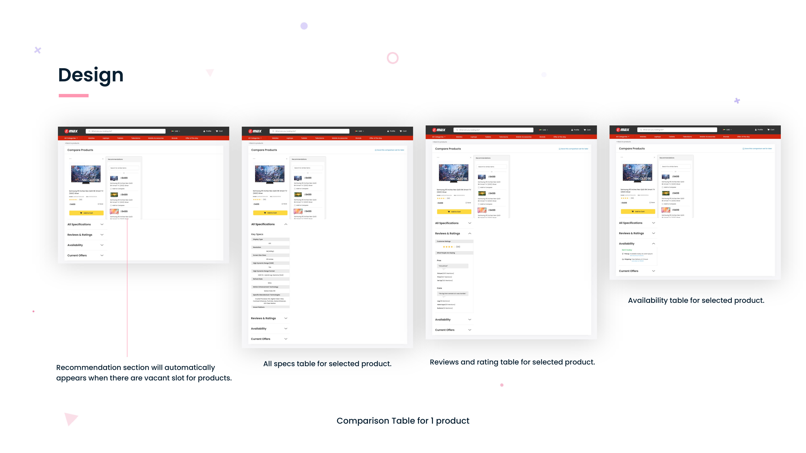
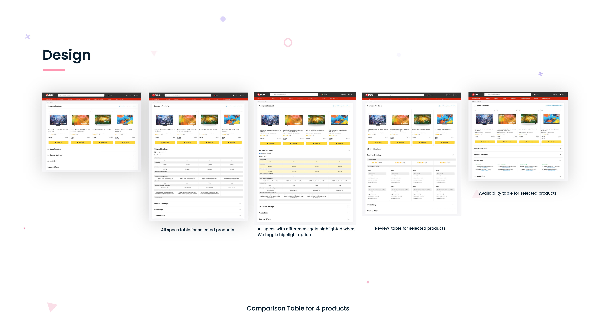

EMAX · ECOMMERCE · UI/UX CASE STUDY
Emax — Product Comparison
34% of high-value purchase decisions at Emax involved comparing multiple products — but the website offered no way to do it. This project designed a four-product, spec-by-spec comparison table that turns a high-friction browsing moment into a confident purchase decision.
View full PDF ↗
01 — OVERVIEW
The gap in Emax's purchase journey
Emax is one of the UAE's largest electronics retailers, selling premium consumer electronics across web, app, and physical stores. Their research showed that 34% of customers comparing products before purchase were navigating between multiple browser tabs or visiting competitor sites — neither of which ended in a conversion on Emax's platform.
The product comparison feature needed to surface specs, availability, ratings, and pricing side-by-side, in a format that made differences immediately scannable — not just listed.
02 — PROBLEM
Why comparison was broken
"Customers comparing high-value electronics were leaving Emax to compare products on competitor sites — and not always coming back."
01
No native comparison
The Emax website had no comparison feature — customers opened multiple tabs or left the site.
02
Spec pages are dense
Individual product pages listed 30+ technical specs — scannable one-by-one, but unusable for comparison.
03
Purchase hesitation
High-value electronics (laptops, TVs, cameras) require confident comparison before purchase. No comparison = no confidence.
04
Lost conversions
34% of purchase journeys involved cross-tab comparison — most of these sessions ended in abandonment.
03 — USERS
Who compares products at Emax
Primary: The considered buyer
- Purchasing high-value electronics (AED 1,000–10,000+)
- Takes 3–7 days to research before deciding
- Compares 2–4 products across multiple sessions
- Cares about specific specs (resolution, refresh rate, storage)
- Wants to justify choice to themselves or family
Secondary: The gift buyer
- Buying for someone else — less familiar with specs
- Relies heavily on ratings and reviews
- Needs simple "best value" or "most popular" signals
- Makes faster decisions but with less confidence
- Abandons if the comparison is too technical
04 — RESEARCH
Understanding the comparison mental model
We analysed session recordings and heatmap data from Emax's existing product pages, conducted user interviews with 15 recent purchasers, and benchmarked comparison features across Amazon, Noon, B&H, and Best Buy to identify patterns that reduced decision friction.

Competitive benchmarking and session data informed the table structure and spec prioritisation
05 — KEY INSIGHTS
What shaped the design
Differences matter more than completeness
Users didn't want to see every spec — they wanted to spot the differences quickly. Highlighting differences (in colour or bold) reduced comparison time significantly in testing.
Availability and price must be visible without scrolling
The top two purchase blockers were "is it in stock?" and "what's the actual price?". These needed to stay sticky at the top of the comparison table.
Rating breakdown is more trusted than average stars
Users dismissed "4.2 stars" without context — but a bar chart showing "82% 5-star reviews, 3% 1-star" was trusted and directly influenced decisions.
Four products is the upper limit of useful comparison
Beyond four columns, the table became unreadable on desktop and unusable on mobile. Limiting to four with easy swap-out of products was the right constraint.
06 — DESIGN PROCESS
From research to table design
We tested two structural approaches — a card-based layout (products as columns, specs as rows) and a feature-priority layout (specs sorted by purchase importance). The card-based approach won clearly in usability testing for speed and findability.
Research
Sessions + interviews + benchmark
Spec Mapping
Priority ranking of 30+ specs
Wireframes
2 structural approaches tested
Prototype
Interactive Figma comparison table
Testing
Task-based usability sessions
07 — FINAL SOLUTION
The comparison table
The final design is a sticky-header comparison table with up to four products. Price and availability are pinned at the top. Specs are grouped by category (Display, Performance, Camera, Battery). Differences are highlighted in the column of the best-performing product. Ratings show full breakdowns, not just averages. Users can swap any column with another product.

Final comparison table — sticky header, spec grouping, difference highlighting
08 — BEFORE VS AFTER
The purchase journey transformation
Before
- Open 3–4 browser tabs for different products
- Manually note specs on paper or in notes app
- Switch to competitor site for comparison view
- No availability status without clicking through to each product
- No rating breakdown — only average score
- High cognitive effort → abandonment
After
- All products compared in one page, no tab switching
- Specs side-by-side with differences highlighted
- Availability and price pinned at the top
- Rating breakdown with review count visible
- Swap any product without losing comparison context
- Add to cart directly from comparison view
09 — BUSINESS IMPACT
Why this mattered for the business
10 — KEY LEARNINGS
What this project taught me
Data density and clarity are not opposites
A 30-spec comparison table can feel light and readable with the right grouping, spacing, and hierarchy. The challenge is information architecture — not amount of information.
Constraint-setting is a design decision
Limiting to 4 products wasn't arbitrary — it came from testing. Beyond 4, usability collapsed. Building constraints into the interface (not just policy) makes them enforceable.
Ecommerce UX is ultimately about trust and confidence
Users don't abandon high-value purchases because the UI is ugly — they abandon because they don't feel confident. Features that increase confidence (rating breakdowns, availability, differences highlighted) directly reduce abandonment.
Good ecommerce design makes the decision easy — not just the purchase.